# Guide
The goal of InfyChat is to give an easy way for everyone can chat using web browser at an affordable price.
# Technologies Used
This system uses multiple technologies to give the best possible experience.
- PHP with Laravel Framework
- MySQL
- JQuery
- AJAX
# Installation Guide
We tried our best to make the installation of the system as easy as possible. System Requirements It is assumed that you have primary knowledge Laravel installation knowledge since this application is built on Laravel.
# System Requirement
It is assumed that you have primary knowledge Laravel and JS application installation knowledge since this application is built on Laravel with JS.
-
You can read about Laravel Requirements here
MySQL 5.7+
You need to enable curl extension.
-
You need to add cacert.pem certificate path in your php.ini file. Click here to see how to set it.
You need update below variables in php.ini file if you want to send bigger files (Optional).
upload_max_filesize = 50M
max_file_uploads = 50
post_max_size = 100M
# Setup InfyChat System
If you have purchased the InfyChat system then you will be able to find 2 different zip files into it.
- dist.zip - For Non-Technical Users
- src.zip - For Technical Users
If you want to setup InfyChat into your local environment then you can take help from here here.
# Non-Technical Users
If you are non-technical person and want to set up InfyChat on your server then you can directly copy the dist.zip folder to your web root directory on server and the following steps:
# 1. Copy files to web server
Upload dist.zip to your web server's root (public_html) and extract it there.
# 2. Setup Default DB
- Open PHPMyAdmin on your server and do a login.

- Click on the Databases tab.

- Create a new database and specify a Database name of your choice and Click Create button.
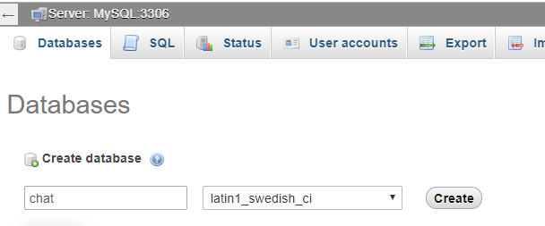
- Now on the left, select the database (chat) OR the one that you have created.
- Click Import in the top menu
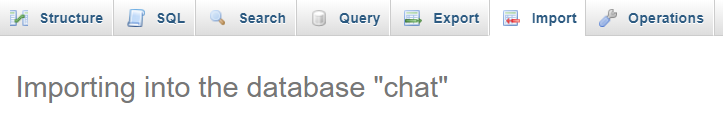
- Under Import, choose the default sql file from dist/database/chat.sql and click button Go.
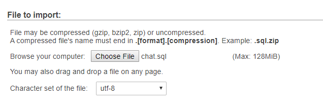
# 3. Setup environment .env file
- Open .env file from your server's root folder.

- Update your .env file
You can find here which env you need to replace
You can also use your choice of storage driver to store your media assets if you want. All of your attachments will be placed into that. And you should be ready to go.
# 4. Update Pusher Configuration
Go to pusher website and do sign up and if you have an account you can login.
- After Login you will get below screen.
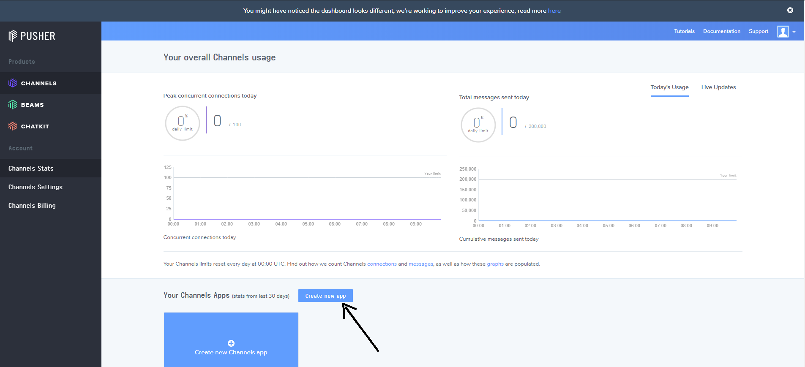
- Click on “Create new app” button. After clicking this button you get below screen.
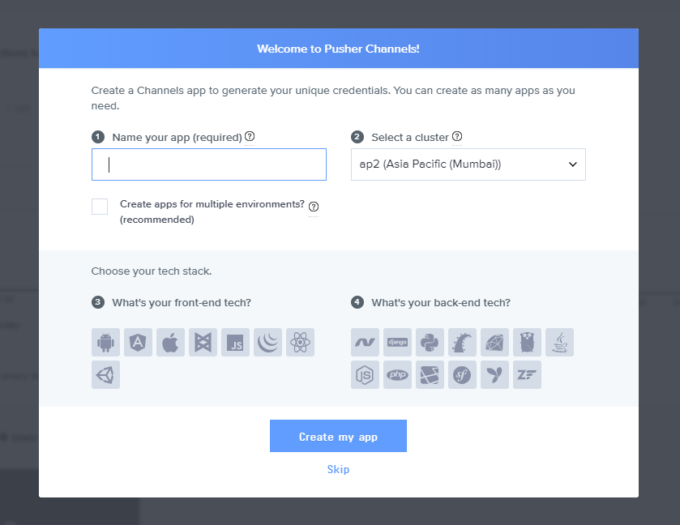
- Now give your app name, select your cluster, select “JS” from front-end tech, “laravel” from back-end tech and click on “create my app” button. As shown in below image.
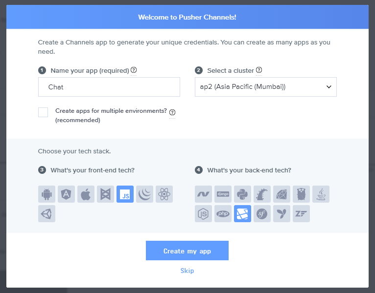
- After creating app yow will redirect to below screen. After that click on “App settings” menu as pointed in below screen.
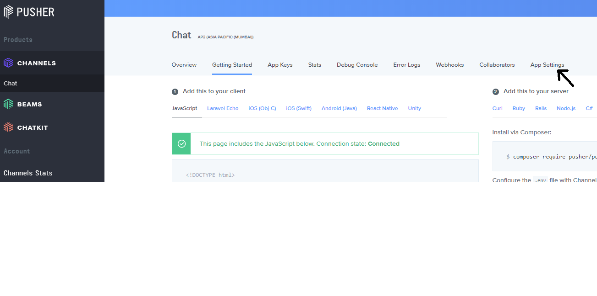
- After clicking on “App Settings” you will redirect to below screen. From there select “Enable client events” checkbox and click on “Update” button.
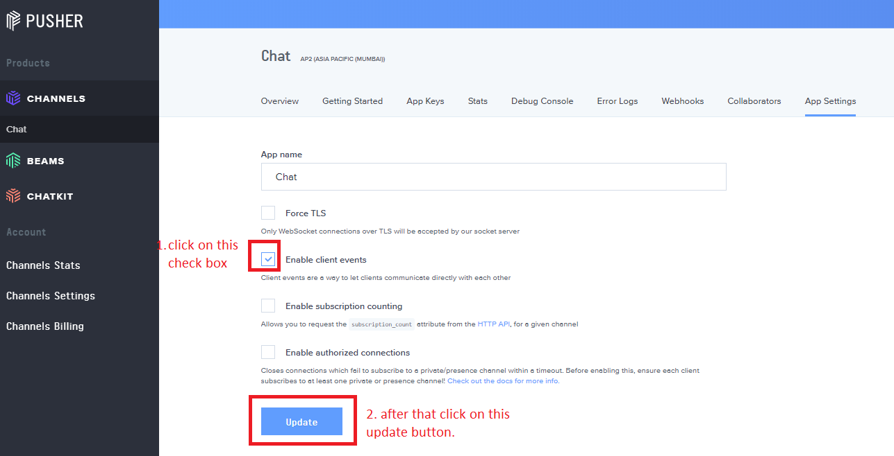
- Now click on “App Keys” menu and you will get below screen.
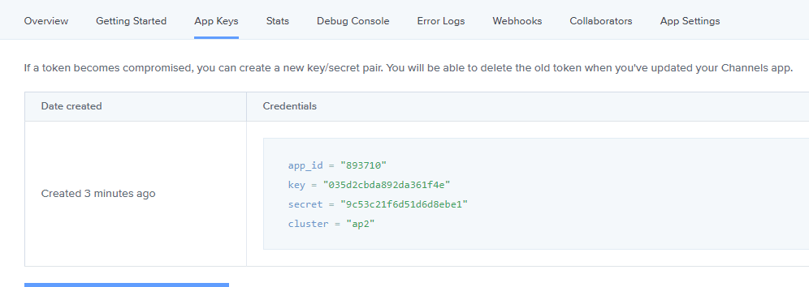
Now add this values in you env file.
- PUSHER_APP_ID - Your pusher app id - PUSHER_APP_KEY - Your pusher app key - PUSHER_APP_SECRET - Your pusher app secret - PUSHER_APP_CLUSTER - Your pusher app cluster
# 5. Admin login
You can login as admin using below credentials.
email: admin@gmail.com
password: admin
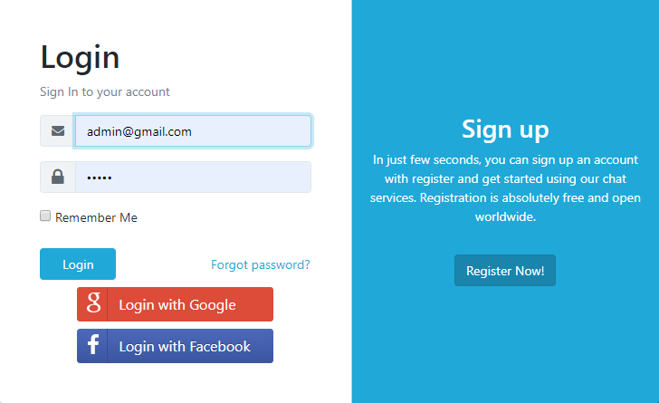
# 6. Landing page
You can access InfyChat app url by YOUR_APP_URL. Now you can see below landing page.
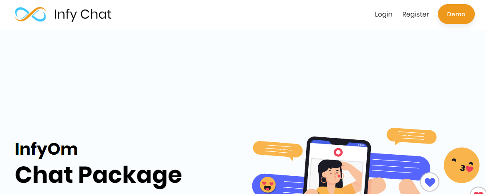
Click on the Register button and do register using you email.
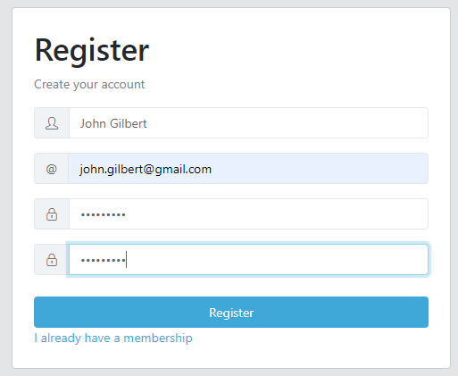
Now check your email you will get below activation mail.
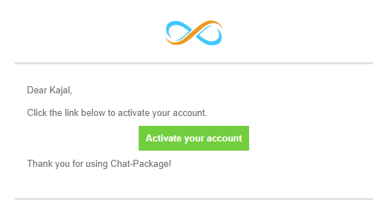
Now click on this “Activate your account” button and you will be redirected to the login page as shown in below image and login using your email & password.
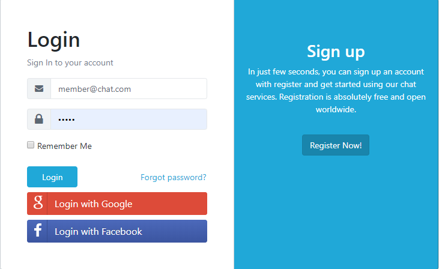
# Technical Users
If you are a developer and have a sound knowledge of installing the Laravel on the server then you can get started with the src.zip folder by following the below steps.
# 1. Setup environment .env file
You need to change the following information into your environment (.env) file.
- APP_NAME - Name of your Application/Library System
- APP_URL - Change this URL with your server URL (including trailing path if you are putting it in sub folder or root website)
- DB_HOST - Put your database hostname here
- DB_PORT - Put your database port here if it does not default to 3306
- DB_DATABASE - Change it to your database name
- DB_USERNAME - Name of your database user
- DB_PASSWORD - Password of your database user
You will also need to set up mail configuration, you can read more about here for that setup based on mail service that you use.
- MAIL_DRIVER
- MAIL_HOST
- MAIL_PORT
- MAIL_USERNAME
- MAIL_PASSWORD
- MAIL_ENCRYPTION
- MAIL_FROM_ADDRESS
- MAIL_FROM_NAME
You have to add One Signal configuration, you can find steps here to configure one signal notification :
- ONE_SIGNAL_APP_ID=
- ONE_SIGNAL_API_KEY=
Add Google & Facebook Auth Configuration :
You can find steps here to setup google auth, and replace related
values into following .env variable.
- GOOGLE_CLIENT_ID=
- GOOGLE_CLIENT_SECRET=
- GOOGLE_REDIRECT="YOUR_APP_URL/login/google/callback"
You can find steps here to setup facebook auth, and replace
related values into following .env variable.
- FACEBOOK_APP_ID=
- FACEBOOK_APP_SECRET=
- FACEBOOK_REDIRECT="YOUR_APP_URL/login/facebook/callback"
Note: replace YOUR_APP_URL by your domain.
You will also need to set up pusher configurations.
- PUSHER_APP_ID - Your pusher app id
- PUSHER_APP_KEY - Your pusher app key
- PUSHER_APP_SECRET - Your pusher app secret
- PUSHER_APP_CLUSTER - Your pusher app cluster
If you want to store your files to direct your s3 bucket then you have to use following
.env variables.
You need to change FILESYSTEM_DRIVER value to s3 when you are using AWS
file storage.
- AWS_ACCESS_KEY_ID=
- AWS_SECRET_ACCESS_KEY=
- AWS_DEFAULT_REGION=us-east-1
- AWS_BUCKET=
- AWS_ENDPOINT=
- AWS_URL=
Update message delete configuration
- DELETE_MESSAGE_TIME - Value should be in minutes, Delete message from just your (sender) side,
- DELETE_MESSAGE_FOR_EVERYONE_TIME - Value should be in minutes, Delete message from both side
Or you can use your choice of storage driver to store your media assets if you want. All of your attachments will be placed into that.
And you should be ready to go.
# 2. Composer install (For Laravel)
You need to install all laravel dependencies with the following command.
composer install
Once the composer installation is completed, run a command to set up a key.
php artisan key:generate
# 3. Install npm Dependencies
Install node modules,
npm install
# 4. Run migrations
Run migrations and seeders for creating a database and fill default data
php artisan migrate --seed
# 5. Import default DB (Optional)
If you are not able to run migrations for some reason. for e.g. if using shared or FTP Hosting then you can import a pre-populated database file from dist folder to your database.
# 6. Build the Project
Build a project with a laravel mix. If you are running in dev mode then run,
npm run dev
Or if you are planning to use in production then run,
npm run prod
That's it and you are ready to go.
# Setup InfyChat into Local Environment
You can setup InfyChat into your local by using both zip files, but we recommend to use dist file so you have to perform minimal steps.
Here are some steps to setup InfyChat into your local environment :
# 1. Install xampp/wamp (if you don't have it).
# 2. Create folder InfyChat
- if you are using wamp then create InfyChat folder under you_path_to_wamp/www/
- if you are using xamp then create InfyChat folder under you_path_to_xamp/htdocs/
# 3. Unzip dist/src zip to InfyChat folder
# 4. Point the domain to the uploaded folder
You need to create virtual host first to setup InfyChat. You can find steps here to create virtual host.
- You can find steps here
to create virtual host on
XAMPP. - You can find steps here
to create virtual host on
WAMP.
Point your domain or subdomain to the InfyChat folder.
Please note that, InfyChat must be installed on a primary domain or subdomain. Installing on a sub-folder will not work, for example:
example.com/InfyChat (Invalid)
localhost/InfyChat (Invalid) if you are putting it in sub folder or root website)
example.com (Valid)
local.InfyChat.com (Valid)
InfyChat.test (Valid)
Open the link to the domain in the browser (Example: https://local.InfyChat.com).
# Third Party Setup
# Setup One Signal Web Notifications
-
Go to One Signal Site
Create Account if you don't have and login.
After login you will able to see below screen, click on
Add Application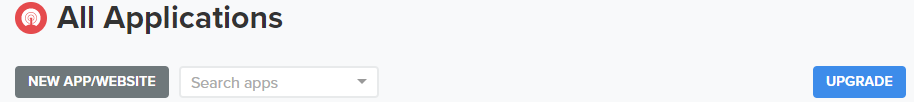Now give you application name and click on button
Create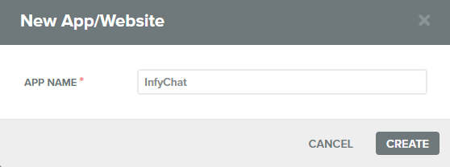Now it will redirect you to dashboard and ask for
Edit Your App.Select Web as like below screenshot and click on button
Next. 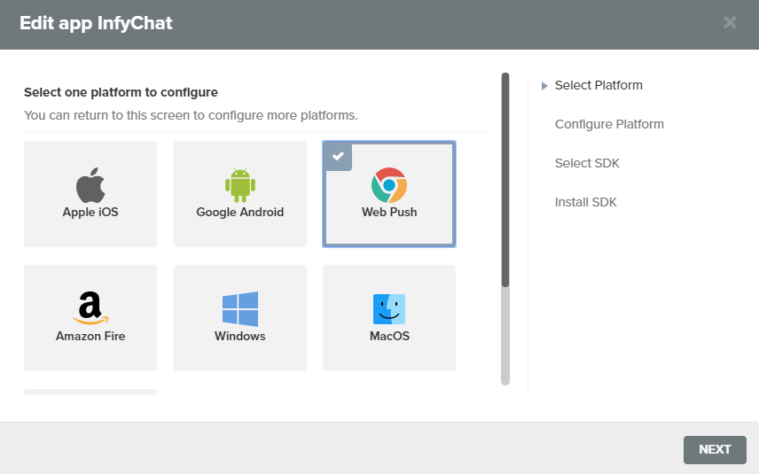Now choose Step-1 Integration 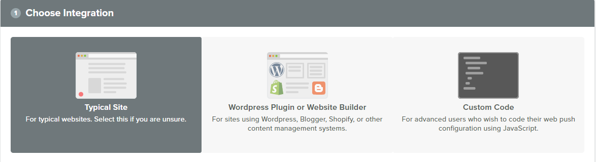
Give you Site Name, You Site Domain, and add your site icon as like below screenshot. 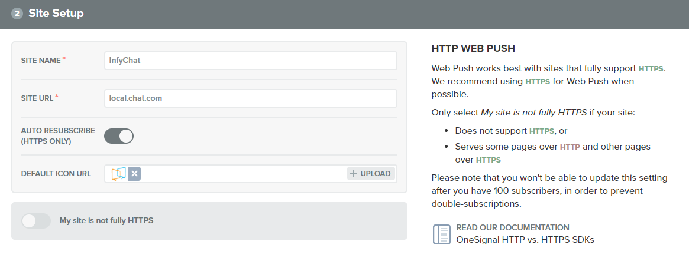
Now click on button
Add Prompt(Optional)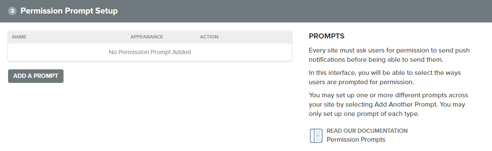Select Prompt whatever you want
(Optional)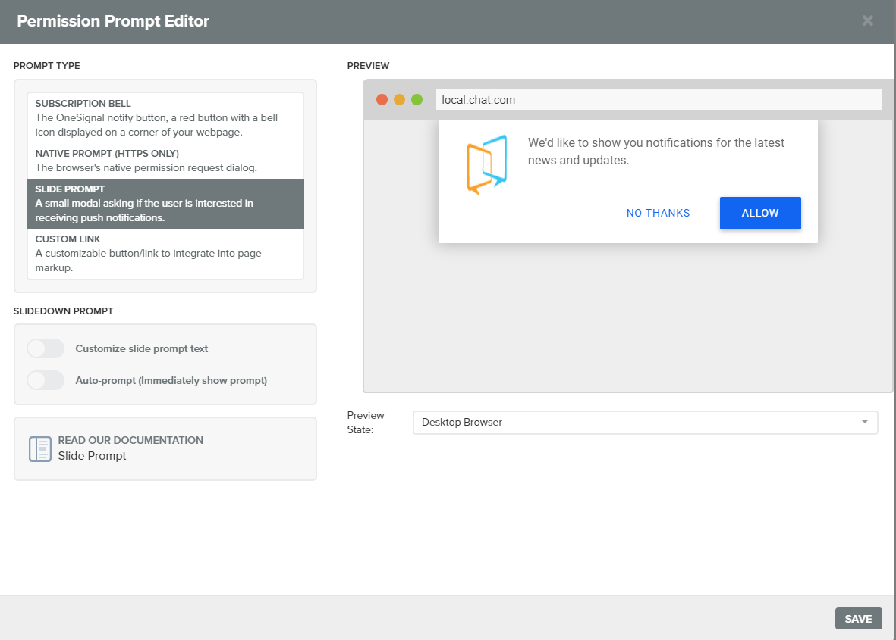Welcome Notification
(Optional)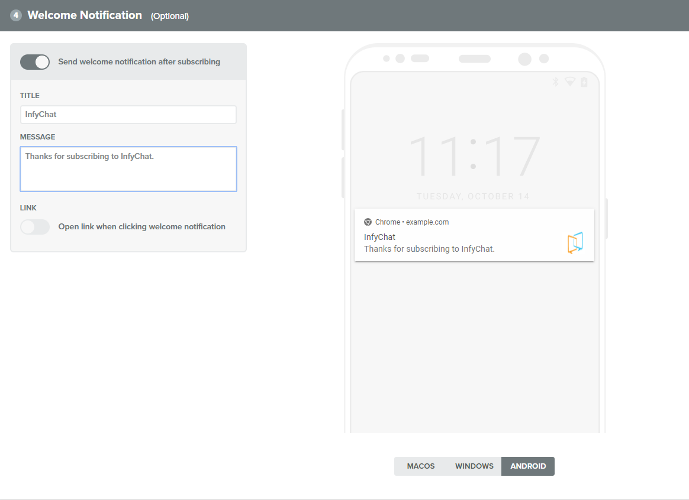Now Click on
Savebutton at last.It will ask for copy code. you can just copy you app id from there and replace it into
.envvariableONE_SIGNAL_APP_ID.It will ask for copy code. you just need to copy your app id from there and replace its value to
.envvariableONE_SIGNAL_APP_ID. 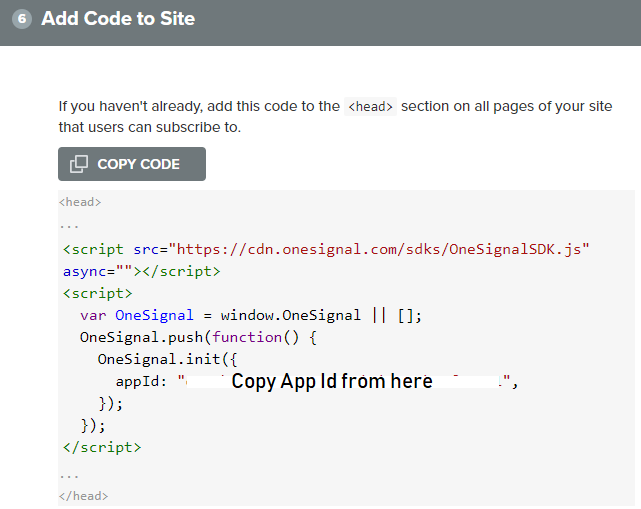Now Click on
Accounts and API KeysOn Top Right Corner.You can find your api key from
REST API Keyssection, copy it and replace into.envvariableONE_SIGNAL_API_KEYthat's it.
# Setup Google Auth
You just need google client secret, id and redirect URL for google auth login.
You can find steps here to setup google auth.
You can watch video here .
NOTE: DO not forget that Authorized Redirect URI should be e.g YOUR_DOMAIN/login/google/callback,
you just need to replace YOUR_DOMAIN by your domain name.
Now you have Client ID, Client Secret and Redirect URI so replace its value into appropriate .env
variable.
# Setup Facebook Auth
You just need facebook app id, app secret and redirect URL for facebook auth login.
You can find steps here to setup facebook auth.
NOTE: DO not forget that Authorized Redirect URI should be e.g YOUR_DOMAIN/login/facebook/callback,
you just need to replace YOUR_DOMAIN by your domain name.
Now you have App ID, App Secret and Redirect URI so replace its value into appropriate
.env variable.
# Key Features and Concepts
Here are the Key Features and Concepts that InfyChat provides.
# Conversations
When you start chatting with any user you can see that conversation as opened and also on the conversations list as well. You can also chat with some other user by opening a new conversation popup and select the specific user to start to chat with him/her.
Also, Users can get a list of active chats with real-time unlimited chatting.
# Reply Message (Including self message reply)
User can give reply to message of another user or they can give reply of their self message too.
# Group Chat
You can create different types groups and add multiple members into group by using this feature.
# Group Types
Groups can be created from Group Type Or Privacy.
- Group Type
- Open Group
- All group members can send message into group.
- Close Group
- The Admin only can send message in group.
- Open Group
- Privacy
- Public
- All group members can add new members or remove existing members from group.
- Private
- The Admin only can add new members and remove member.
- Public
# Read Messages
When all members of group can read your message then message will be display with green tick.
# Media Listing
You can see list of media that people sent in group details bar.
# Update Group Details
You can change group name and its image, all changes that you have did that reflect real time in others members group panel.
# Add New Members & Assign Role
Admin can add new members to group and assign admin role to them. or admin can remove
their role too. admin member can not change role of group admin.
# Remove Member
Admin can remove group member from group. the cool thing is member can not remove group admin from group.
# Leave Group & Delete Group
It also support leave group and delete group, when members leave group OR removed from group they are not received latest messages of that group. and when you delete group it flushed from your conversations list.
# Read receipt
Users can get real-time delivery and read receipt updates of chat messages on both sides.
# Files Upload ( With S3 Support )
You are allowed to Multiple upload two-way file sharing like images, videos and some supporting documents e.g docs, Xls, pdf files, etc. And Light-box for getting a full-screen preview for images.
uploaded files will preview with pretty good icons so user can easily identify whether file is pdf, docs, xls OR txt.
You can also upload your files to direct your s3 bucket by configuring s3 .env
variables.
# Youtube Video Integration
In this feature, when a user sends any youtube video links to any user, the system will automatic detects it as a youtube video and it displays its thumbnail on chat.
# Current Status Indication
Online/Offline and Last seen status indication on the top of the chat and profile drawer as well.
When a user is typing something to another user then Typing status is indicating to
opposition user.
# Emoji 😄 💥 💖
You'll find all current smileys and people emojis in our chat app. Have fun with diving into the colorful world of emojis! ☺️
# Delete Conversation
By using this feature you can delete conversation with specific people.
# Single Message Delete
You can delete specific message that you have sent to other, by just hovering on that message and clicking on delete icon.
# Delete Message For Everyone
You can delete your message from both side that you have sent, default time limit for permanent
message delete is 5 min, admin can extend it by change value of env variable DELETE_MESSAGE_FOR_EVERYONE_TIME.
# Shared Media Collection
All media's that you have sent to some specific person OR other person that sent you, you can find all of that on side profile bar.
# Block Unblock Users
By using this feature users can block other users. for e.g there is User 1 and User B, if User A block User B then both user can not send message to each other anymore. Remember that user can not block super admin user.
# Blocked Users Listing
You can find all blocked users into blocked users listing tab. from there user can unblock specific user.
# Draft Message
This feature is pretty cool, when you are sending message to someone and you have type lots of lines and your tab is closed, so don't worry you don't need to write all of that lines again, just go to that users conversation, and all your lines are there.
# Incoming message Notification
Users can get message notification for new messages with labels and counts on the conversations list.
# Member Profile
You can see detailed information of the user including user photo, current status, phone number, and his/her bio as well.
# User Profile
By using this feature, Logged in user can Customize his/her avatars. In the sense of updating his/her photo, mobile number and bio as well.
User can also remove his/her profile image.
# Change Password
You can change your account password by using this feature.
# Users and Roles Management
Admin can manage all users from the admin panel. By creating users, admin can provide username and password to new users and also user can register on his own. There are system default roles like Admin and Member. But admin can redefine as per his own choice and can create a new one as well.
# Optimizations for Animation
Many optimizations used for better UX such as smart caching or GPU powered animations.
# User Initials
When people don't upload their profile photo we are rending user initials from people's name.
# Unread conversation count | (9+) Conversation | InfyChat
If someone send you message then conversation count on tab automatically increase to related number of unread conversation count. and also it works in reverse way like when you read that conversation the unread count will decrease.
# Web Notifications
We are supporting one signal web push notifications you can simply enable/disable it from profile section. it helps when you are not active in application and some one sent you message.
# Social Login - Google & Facebook
Register, Check mail, Verify email its a long process. You can now login with your google and facebook accounts too. all you need to do is Enter your google/facebook credentials and login.
# Abuse Word Filtering
To prevent from the Bad/Abuse word we introduce this feature. when some one try to sent you abuse
word it will replaced by *. e.g ****
# Header Notifications
While you are in some other pages (not in chat page), that time if some one is sending you message personally or in group chat, that time notification count is increase and you are able to see that person and its message into that notification tab.
If again you receive the notification, that time the inline notification count increased, the main notification count remains as it is.
# Link Preview
While sending message with links/url's you are able to see that URL preview below your message with attractive look.
# Archive/UnArchive Conversations
When you have lot's of conversations and you want to archive some conversations from your main conversations list that time you can use this feature.
By Arching Conversation (Either User /Group) that conversation removed from main conversation and goes to Archive Conversations Tab. All your messages are still there just that conversation is no longer visible into Active Conversation tab.
Same By UnArching Conversation you are now able to see that conversation again in Active Conversation Tab.
# Copy / Paste Images Direct Into ChatBox
Now you don't need to send files manfully, by selecting it and upload. you just need to copy that
file and past by using Ctrl + V and copied image will display there you just need to
hit upload btn and it will send to user.
# User Privacy
We have added this important feature by considering user's privacy. we have added 2 privacy settings in user profile.
- Public (Any one can send message to you)
- Private (Only Your contacts can send message to you)
# Chat Request
We have added this important features which help you when to prevent un-used user's messages. if your
privacy is Private then other user can not directly send message to you.
They need to send request to you, then you will get chat request from that user, now its upto you that you will Accept that request or Declined it.
If you are accepting then the user becomes your contact and he is able to send new messages to you.
If you are declining it then the user needs to send chat request again.
# Custom Status (On Vacation 🌴)
This is quite cool feature. currently user needs to check that you are online or offline. and you are offline then what's the reason ??, No one knows until they will contact to you.
But if you are don't want that some one can not disturb to you. then you will need to set custom
status that you are on lunch or on vacation.
Others users are able to see your custom status besides your name, now they will get an idea that you
are offline because you are On Vacation or somewhere else.
So Enjoy !
# Message Read/Unread Recipients
By using this feature you can check that who have read your message and which users still not read that message. you have to click on message information and all details about the Message read recipients and Message unread recipients are there.
You can also check the time when user has read the message.
# Gender Support
We have added gender (Male /Female) support into profile. also the cool thing here is if you are not setting up the profile picture we are display the default profile picture as per gender.
You can also filter the users into conversations popup by gender filter.
# Report User
User can report user if he/she found something wrong. all you have to do is open that user side drawer and click on report user button. write notes why you are reporting given user and submit it.
Admin is able to see all reported users with given inputs and they can take appropriate action from that.
# Archive (Soft Delete)/Restore Users
You can now archive specific users by using this feature. please note that archive means soft delete. archived users will not display in archived tab in conversation window.
it will soft delete users and all its conversations. its still exists in db but it will not show anywhere.
Now if you want to again make this user work as normal, you have to restore that user and all its records again visible to public.
# Settings
By using this feature you can enable/disable group chat. you can change your application name and upload logo of your application. you can also change the favicon from setting module.
# Security
we are providing security from XSS by encoding user inputs so there is no possibility for xss. We also provide security from SQL Injection, so if any user will give any vulnerable input it will not affect our system.